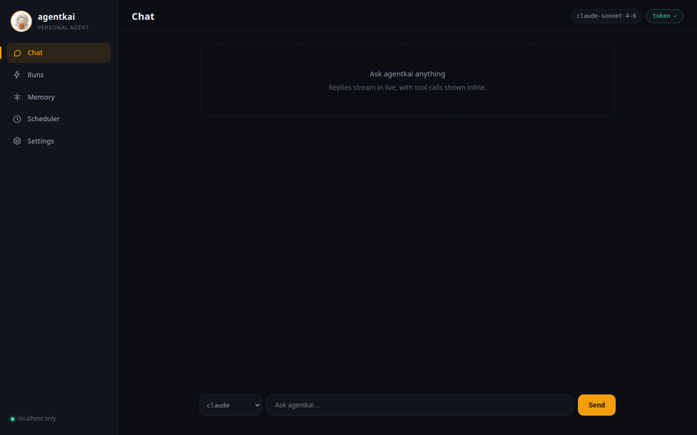
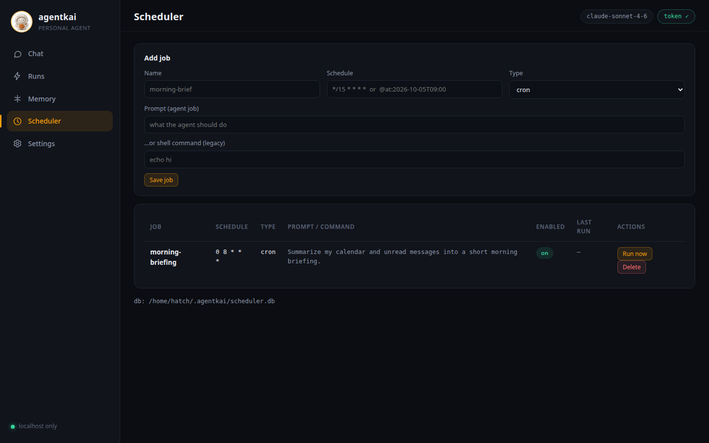

Your models, your keys
agentkai ships no model of its own — it never could lock you in. Switch per run, per scheduled job, or per chat channel. Keys are yours, never printed, never logged.
agentkai run "…" --model local fully offline with Ollama
agentkai is an open-source personal AI agent that runs entirely on your machine — your models, your tools, your memory. No accounts. No cloud. No lock-in.
pip install agentkai
$ agentkai run "summarize what's in ~/Documents" --model claude
▸ reading ~/Documents tool · low risk · allowed
▸ shell: du -sh ~/Documents/* tool · medium risk · asking…
✓ approved by you
Here's what needs you today: the lease renewal in contracts/ expires Friday, and notes/ has two unfinished drafts. Everything else is archived or reference material.
run saved · replay it any time with agentkai runs show
Bring your own model — one provider layer, zero lock-in
How it works
No cloud account, no subscription, no black box. You bring the model; agentkai brings everything else.
Set one API key — or none. Aliases claude, gemini, gpt, glm, and local resolve through a single LiteLLM layer, with fallbacks when a provider hiccups.
A permission-gated shell, a real Chromium browser, an MCP client, 12 bundled skills, and subagents — backed by memory kept as plain markdown files you can read, edit, and version with git.
Terminal, the local web dashboard, or your phone: the messaging gateway bridges Telegram, Discord, and WebChat to the same agent, with the same memory and tools.
Features
Local-first, honest about limits, and every moving part is inspectable. No black boxes, no rented brain.
agentkai ships no model of its own — it never could lock you in. Switch per run, per scheduled job, or per chat channel. Keys are yours, never printed, never logged.
agentkai run "…" --model local fully offline with Ollama
Every tool call passes a risk-based allow / ask / deny gate, and gets audited. Sending email, posting, or charging money always asks first.
A real Chromium the agent can drive — pages render, scripts run, forms work. Not a text scrape pretending to be a browser.
Plain markdown in ~/.agentkai/memory/ — no vector-store black box. Read it, edit it, commit it to git. Nightly "dreaming" folds the day into durable facts.
Cron jobs, one-shot timers, and a heartbeat check-in, stored in SQLite so they survive restarts. Unattended jobs can never run high-risk tools — denied, not asked.
One agent behind every surface: terminal, local dashboard, Telegram, Discord, and built-in WebChat — plus an experimental WhatsApp bridge. Owner approvals (APPROVE / DENY) work from whichever chat you're in.
agentkai gateway one daemon, every channel
Fan work out to subagents, and plug in any MCP server (stdio or SSE) — new tools join the same permission gate as the built-ins.
Speech-to-text with faster-whisper (offline) or OpenAI, text-to-speech, and image generation via OpenAI or a local Stable Diffusion server. Nothing configured? You get an honest error, never a fake.
Models
Hosted models take one environment variable each. The local alias needs nothing at all: install Ollama, pull a model, and agentkai runs with no key, no network, no cost.
agentkai models shows each alias and whether its key is set — never the key itself# bring your own key export ANTHROPIC_API_KEY=sk-ant-… agentkai models claude → anthropic/claude-sonnet-4-5 ✓ key set gemini → gemini/gemini-2.5-flash ✓ key set local → ollama/qwen3:32b ✓ local # or skip keys entirely agentkai run "summarize this folder" --model local
Memory
Memory is markdown on your disk: durable facts, a persona file, daily logs, and pages for the people in your life. Keyword search, no embeddings service, nothing you can't open in a text editor.
SOUL.md + USER.md — who the agent is, who you areMEMORY.md, consolidated nightlymemory/ ├── MEMORY.md # durable facts ├── SOUL.md # agent persona ├── USER.md # about you ├── 2026-10-01.md # daily log └── people/ ├── INDEX.md └── example-person.md # git init && git commit — your call
Scheduler
Recurring cron jobs, one-shot reminders, and a heartbeat that checks in on its own. Jobs live in SQLite, are managed from the CLI or the dashboard, and run under the same permission rules — with high-risk tools denied outright while you're away.
scheduler add / list / run-once / removeagentkai runs showagentkai doctor verifies the whole setup in one command# every weekday at 7:00 agentkai scheduler add morning-brief \ --schedule "0 7 * * 1-5" \ --prompt "Summarize today's calendar and unread email." # one-shot agentkai scheduler add dentist --at 2026-10-02T09:00 \ --prompt "Remind me to leave for the dentist." $ agentkai scheduler list morning-brief cron 0 7 * * 1-5 next: tomorrow 07:00 dentist at 2026-10-02T09:00
Dashboard
agentkai dashboard launches a local web app: chat with streaming tool calls, browse and edit memory, inspect every past run, and manage scheduled jobs. Same agent, same tools underneath.


Localhost only. Binds 127.0.0.1 — never exposed to your network.
Fresh token every launch. No password to remember or leak.
Zero third-party resources. The whole UI ships with agentkai and works fully offline.
CLI
Twelve commands cover the whole agent. These examples are real — install agentkai and try them.
# run one agent task, streaming agentkai run "list the files in my home directory and summarize what this machine is for" # → the answer streams as the model thinks; medium/high-risk tools ask first # pass -y to auto-approve, only when you trust the task
agentkai runRun one agent task with live streaming outputagentkai chatSend one prompt, print the final answeragentkai modelsShow model aliases and what they resolve toagentkai doctorCheck config, keys, scheduler DB, memory, toolsagentkai runsInspect past runs from the event log, with replayagentkai dashboardLaunch the local web dashboardagentkai gatewayRun the messaging gateway daemonagentkai schedulerManage scheduled agent jobsagentkai devicesPair phones and laptops, reach them from the agentagentkai goalsDurable goals: create, track, closeagentkai trackTracked items: reservations, deliveries, remindersagentkai skillsManage SKILL.md playbooksSkills
Skills are reusable playbooks — a SKILL.md plus optional tools — that teach the agent a job once. Write your own the same way and drop them in.
Repos, issues, pull requests, and Actions workflow runs.
Search, read, draft, and send email through your account.
Read your agenda; create, update, and delete events.
Steps, sleep, and workout trends from exported HealthKit / Health Connect files.
Find images by keyword, with source pages and license info.
Generate and edit images via OpenAI or a local Stable Diffusion server.
Stripe payment intents — high-risk, so every charge needs your explicit approval.
Restaurants, shops, hours, and contact details via OpenStreetMap.
Product search with images and links; groceries built in via OpenFoodFacts.
Search Spotify, see what's playing, control playback.
Live flight tracking (OpenSky, no key) plus booking providers you plug in.
Transcribe voice notes and recordings; speak text aloud.
Skills that talk to a service use your account and key for it — nothing is shared. Every skill install is integrity-checked: agentkai skills install records a content hash that's verified before the skill's code ever runs. How skills work →
Safety, by default
Powerful tools are only useful if you can trust them unattended. agentkai gates every action by risk, audits what happened, and keeps your keys and data on your machine.
Read the privacy modelLow-risk reads and lookups run freely — listing files, searching memory, checking the calendar.
Medium and high risk stops and asks: shell commands, sending email, posting, charging money.
Blocklisted paths and high-risk tools in unattended jobs are refused outright — no prompt to sleep through.
FAQ
No. Install Ollama, pull a model (ollama pull qwen3:32b), and run with --model local — no key, no network, no cost. Hosted models (Claude, Gemini, GPT, GLM) use your own key, set as an environment variable.
Nowhere by default. The agent, memory, scheduler, and dashboard all live in ~/.agentkai/ on your computer — no account, no telemetry, no analytics. The only things that leave are what you choose: prompts to your hosted model provider, and API calls for skills you configured. With a local model, nothing leaves the box.
Aliases claude, gemini, gpt, and glm cover the major providers, local covers Ollama, and anything LiteLLM speaks (100+ models) can be wired in. Aliases can differ per run, per scheduled job, or per chat channel, with fallbacks.
agentkai is free and open source (Apache-2.0). If you pick a hosted model, you pay that provider directly at their rates — agentkai adds no markup and holds no keys of its own. Local models cost nothing but electricity.
Yes — the messaging gateway connects Telegram, Discord, and a built-in WebChat to the same agent, and a WhatsApp bridge is available as an experimental option. The web dashboard itself stays localhost-only by design; for phone access, pair a device or use a chat channel.
Python 3.10 or newer and pip: pip install agentkai. Run agentkai doctor afterwards — it checks your config, provider keys, scheduler database, memory, tools, and dashboard assets, and tells you exactly what's missing.
Honest scope: agentkai is early-stage software, developed in the open. Core flows — agent runs, tools, memory, scheduler, dashboard, channels — are implemented and tested. Areas marked experimental in the docs (like the WhatsApp bridge) are real code with real limits; they're labeled, not hidden.
One install. Your model, your machine, your rules.
pip install agentkai